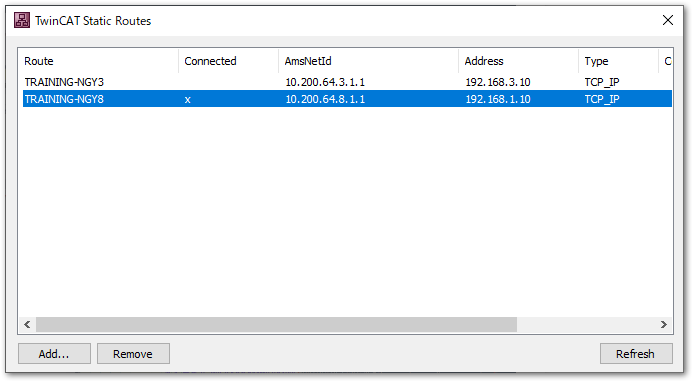
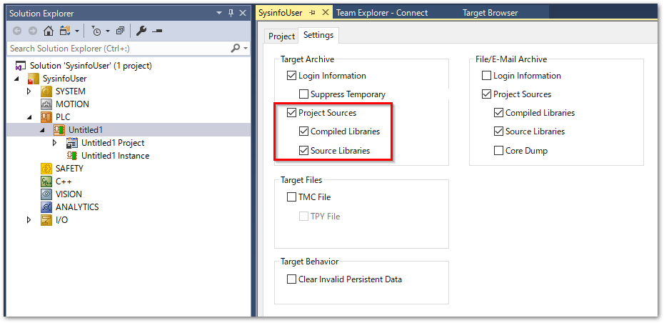
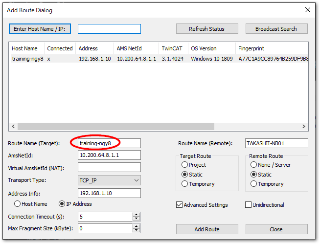
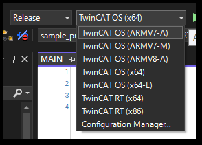
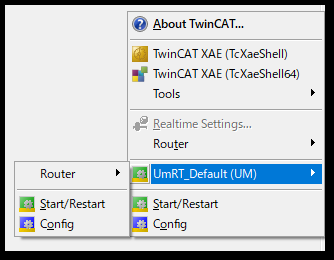
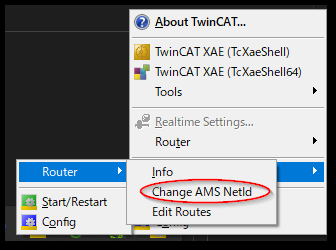
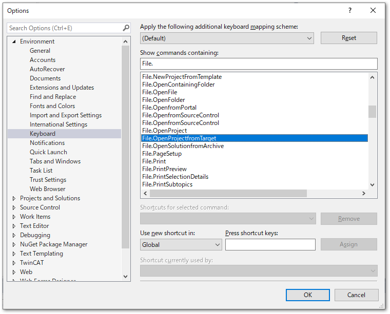

プロジェクトの読み書きの自動化#
既に稼働中の設備において、IPCのプロジェクト書き換えを行う場合、次の2点の作業が必要です。
現在稼働中のプロジェクトのバックアップを取得する。
新しいTwinCAT XAEプロジェクトをIPCに書き込み（ダウンロード）し、RUNモードへ移行し、プログラムスタートする。
これらをTwinCAT XAEのGUI操作無しにスクリプトで実施する方法についてご説明します。
事前準備#
- 言語設定
本スクリプトでは、ターゲットIPCからのバックアップ取得の際、Visual Studioのメニューコマンドをリモートで操作する
ExecuteCommandを用いています。このコマンドは、Visual Studioの言語設定により変化します。ツールバーの Tools > Options… メニューの Environment > International 設定
紹介するスクリプトは、この設定が英語であることを前提としています。その他の言語に切り替えてお使いいただいている方は、バックアップが正しく機能しませんのでご注意ください。
- ターゲットへの接続
TwinCAT XAEがインストールされた別PCから行う事を前提としています。該当PCのEdit routeにて、ターゲットIPCへの接続を行ってください。本節の例では、下記の通り接続が有るものとします。
- Route名
バックアップに用います。ユーザモードランタイムは指定できません。下記スクリプト例では、
BTN-000****として説明します。
- AmsNetId
あらかじめ指定したTwinCATプロジェクトを書き込む（ダウンロード）先のターゲットのルータAMS Net IDを指定します。ユーザモードランタイムを指定可能です。下記スクリプト例では
10.200.64.8.1.1として説明しています。
 図 7.1 Edit Routesウィンドウ#
Tip
Usermode runtimeの場合は、ユーザモードランタイムにてターゲットを起動させてください。
IPCからバックアップを収集するスクリプト#
次のスクリプトにて、ターゲットのIPCからプロジェクトファイルを吸い出して、開発環境にプロジェクトツリーを展開することができます。
ターゲットにソースファイルを含める設定を行ってください。
ターゲットからバックアップしたプロジェクトのPLCを開くには、そもそもIPCに書き込むPLCプロジェクトにソースファイルが含まれていなければなりません。
PLCプロジェクトのSettingsタブを開いて、Project Sourceおよびそのサブメニュー全てにチェックを入れてください。

1# バックアップ用変数
2$backupBaseDir = $PSScriptRoot + "\backup" # バックアップを保存する親フォルダパス
3$BackupProjectName = "backup"
4$BackupTargetRouteName = "btn-000****" # バックアップ元のターゲットIPCのRoute名
5
6#$dte = new-object -com VisualStudio.DTE.10.0 # VS2010
7#$dte = new-object -com VisualStudio.DTE.11.0 # VS2012
8#$dte = new-object -com VisualStudio.DTE.12.0 # VS2013
9#$dte = new-object -com VisualStudio.DTE.14.0 # VS2015
10#$dte = new-object -com VisualStudio.DTE.15.0 # VS2017
11#$dte = new-object -com VisualStudio.DTE.16.0 # VS2019
12#$dte = new-object -com VisualStudio.DTE.17.0 # VS2022
13#$dte = new-object -com TcXaeShell.DTE.15.0 # TwinCAT XAE Shell
14$dte = new-object -com TcXaeShell.DTE.17.0 # TwinCAT XAE Shell x64 (build 4026)
15
16### backup process
17
18# create backup directory including datetime string.
19$now = Get-Date
20$strDT = $now.ToString('yyyyMMddHHmmss')
21$backupDir = $backupBaseDir + "\" + $strDT + "_" + $BackupProjectName
22
23if (test-path $backupDir -pathtype container) {
24 Remove-Item $backupDir -Recurse -Force
25}
26New-Item $backupDir -type directory
27
28# fetch from target
29$dte.ExecuteCommand("File.OpenProjectSolutionFromTarget", $BackupTargetRouteName + " " + $backupDir + " " + $BackupProjectName);
30
31# Save as solution
32$sln = $dte.Solution
33$sln.SaveAs($backupDir + "\" + $BackupProjectName + ".sln")
34$sln.Close()
このスクリプトをtwincat_backup.ps1などPowershellが動作するテキストファイルとして保存します。保存する前にスクリプト先頭部にある変数定義を次のとおり適切に設定してください。
- $backupBaseDir
バックアップを保存する親フォルダパスを指定します。
$prjDir同様、$PSScriptRootからの相対パス表記でも構いません。- $BackupProjectName
バックアップを保存するプロジェクト名を指定します。
- $BackupTargetRouteName
図 7.1の接続先Route名を小文字に変換した文字列を指定します。
警告
$BackupTargetRouteNameは、下記の通りAdd Route Dialogで作成した際の、Route Name(Target)項目で設定した内容に準じます。この設定はデフォルトで小文字ですが、意図してこの設定を変更した場合は、その文字列を指定する必要があります。一方、Routerの一覧（図 7.1）ではRoute名が全て大文字となっています。大文字小文字が異なると、正しくRoute名として認識できなくなりますのでご注意ください。

- $dte
Visual Studioのオートメーションモデルである
EnvDTE.DTEインターフェースが提供するAPI機能です。Visual Studio または TwinCAT XAEシェルなどの開発環境のバージョンにより異なるProgram IDを指定することでオブジェクトを生成することができます。Visual StudioのProgram IDを参照してください。リスト 7.1例では、TwinCAT XAEシェル版の開発環境を用いています。
Visual Studioのバージョンによるコマンドの違いに注意
ターゲットからプロジェクトを開くコマンドをDTEインターフェースを通じて実行するには、$dte.ExecuteCommand()では第一引数にコマンドを記載する必要があります。4024をVisual Studio 2017 をベースとする build 4024 と、Visual Studio 2022 をベースとする build 4026 では次のとおりコマンドが異なりますのでご注意ください。（Visual Studio DTEインターフェースの使い方参照）
build 4024（TcXaeShell.DTE.15.0） |
build 4026（TcXaeShell.DTE.17.0） |
File.OpenProjectFromTarget |
File.OpenProjectSolutionFromTarget |
次に、$backupBaseDirで設定したバックアップを保存する先のフォルダを用意してください。本スクリプト例では、Powershellスクリプトを配置する同じディレクトリに、backupという名前の空フォルダを作り、その中に保存する仕様です。
設定が完了したら、Powershellを実行してください。下記の通り、実行した日時の数字列が先頭に付いたプロジェクトフォルダが自動的に作成され、その中に$BackupProjectNameで指定した名前でソリューションが作成されます。
Mode LastWriteTime Length Name
---- ------------- ------ ----
d----- 2023/12/25 16:22 20231225162119_backuo
d----- 2023/12/25 16:28 20231225162755_backup
d----- 2023/12/25 16:33 20231225163334_backup
: : : :
ランタイムへ新しいプロジェクトを書き込むスクリプト#
既存のプロジェクトを開き、ユーザモードランタイムや、ターゲットIPCなどのXARに書き込むスクリプトをご紹介します。
1# プロジェクトのビルドとターゲットへの書き込み用変数
2$prjDir = $PSScriptRoot + "\sample_project" # 元となるプロジェクトが格納されたフォルダパス
3$prjName = "sample_project" # $prjDir以下にあるソリューションファイル名から拡張子(*.sln)を取り除いたもの
4$targetNetId = "10.200.64.8.1.1" # ダウンロード先のルータ設定で行ったターゲットIPCのAmsNetIdを指定
5
6#$dte = new-object -com VisualStudio.DTE.10.0 # VS2010
7#$dte = new-object -com VisualStudio.DTE.11.0 # VS2012
8#$dte = new-object -com VisualStudio.DTE.12.0 # VS2013
9#$dte = new-object -com VisualStudio.DTE.14.0 # VS2015
10#$dte = new-object -com VisualStudio.DTE.15.0 # VS2017
11#$dte = new-object -com VisualStudio.DTE.16.0 # VS2019
12#$dte = new-object -com VisualStudio.DTE.17.0 # VS2022
13#$dte = new-object -com TcXaeShell.DTE.15.0 # TwinCAT XAE Shell
14$dte = new-object -com TcXaeShell.DTE.17.0 # TwinCAT XAE Shell x64 (build 4026)
15
16### Build or Activate specified project process
17$prjPath = $prjDir + "\" + $prjName + ".sln"
18$sln = $dte.Solution
19$sln.Open($prjPath)
20
21$project = $sln.Projects.Item(1)
22
23### Only build. build image is created into "_boot" directory
24# $sysManProjectName = $project.FullName
25# $sln.SolutionBuild.BuildProject("Release|TwinCAT OS (x64)",$sysManProjectName,$true) # TwinCAT OS (x64) -> Usermode runtime
26
27### Build and Activation into target IPC
28$systemManager = $project.Object
29$systemManager.SetTargetNetId($targetNetId)
30$systemManager.ActivateConfiguration()
31$systemManager.StartRestartTwinCAT()
32
33$sln.Close()
デプロイは行わずにビルドだけ行いたい場合
上記スクリプト例では、ターゲットにプログラムをデプロイし、RUNモード移行、およびPLCスタートまで自動化しています。ビルドだけを行いたい場合もコメントアウトした状態で併記していますので、次のとおり書き換えてください。
### Only build. build image is created into "_boot" directory
$sysManProjectName = $project.FullName
$sln.SolutionBuild.BuildProject("Release|TwinCAT OS (x64)",$sysManProjectName,$true) # TwinCAT OS (x64) -> Usermode runtime
### Build and Activation into target IPC
# $systemManager = $project.Object
# $systemManager.SetTargetNetId($targetNetId)
# $systemManager.ActivateConfiguration()
# $systemManager.StartRestartTwinCAT()
ビルドしたブートイメージは、プロジェクトフォルダ内の_bootフォルダに生成されます。（Bootイメージの作成参照）ただし、"Release|TwinCAT OS (x64)"の部分でどのターゲット向けにビルドを行うのか明記する必要があります。ターゲットの環境に合わせて書き換えてください。
- TwinCAT OS
Usermode runtimeやTwinCAT Linuxをターゲットとする場合のビルド
- TwinCAT RT
カーネルモードで動作するTwinCAT XAR向けのビルド
このスクリプトをtwincat_deploy.ps1などPowershellが動作するテキストファイルとして保存します。スクリプト先頭部にある変数定義を次のとおり適切に設定します。
- $prjDir
デプロイする元のTwinCATプロジェクトフォルダを配置したディレクトリのパスを指定します。
- $prjName
$prjDir以下にあるソリューションファイル名から拡張子(*.sln)を取り除いた名前を設定してください。
- $targetNetId
図 7.1の接続先AmsNetIdを指定します。デプロイ先をXAE開発環境のPC上のUsermode runtimeにする場合、NetIDを次図のようにタスクトレーから調べて設定してください。


- $dte
Visual Studioのオートメーションモデルである
EnvDTE.DTEインターフェースが提供するAPI機能です。Visual Studio または TwinCAT XAEシェルなどの開発環境のバージョンにより異なるProgram IDを指定することでオブジェクトを生成することができます。Visual StudioのProgram IDを参照してください。リスト 7.2例では、TwinCAT XAEシェル版の開発環境を用いています。
また、スクリプトで指定した$prjDirにターゲットへ書き込むソリューションプロジェクトを、$prjNameで指定したソリューション名で格納してください。
設定が完了したら、Powershellを実行してください。$prjDirに格納したプロジェクトを自動的にビルドしてIPCへ書き込み、その後、RUNモードへ移行、PLCスタートまで行います。
API解説#
基本としてTwinCATのアプリケーションリソースへ接続する方法は、次の二通りがあります。（参考）
- Visual Studio DTE
Microsoft社が提供するVisual Studio用のインターフェース
EnvDTE.DTEを使ってアクセスします。本スクリプト上では、$dteにオブジェクトが格納されています。- TwinCAT Automation Interface
Beckhoff TwinCAT プロジェクトが提供するAPIインターフェースを使ってアクセスします。本スクリプト上では、
$SystemManagerにオブジェクトが格納されています。
上記を組み合わせて、TwinCAT上の操作を自動化させることができます。
Visual Studio DTEインターフェースの使い方#
スクリプト中での使用箇所は次のとおりです。COMオブジェクトを作成するには、Visual StudioのProgram IDに示されるように各アプリケーションのバージョン毎に異なる Program IDが割り振られており、new-object -comでProgram IDを指定することで取得できます。これをオブジェクト変数$dteに代入し、以後dteインターフェースで定義されたプロパティやメソッドを活用してリソースにアクセスします。
多用されるメソッドとしては、ExecuteCommandがあります。これの第一引数には、コマンド名File.OpenProjectFromTargetを指定し、第二引数にはスペース区切りで、そのコマンドの引数を指定します。これらのProgram IDで指定したアプリケーションが提供するコマンドは、Visual Studioの場合、ツールバーのTools>Options...メニューのEnvironment>Keyboardを開くと全てのコマンドが一覧されます。

注意点として以下が挙げられます。
- Visual Studioのバージョンによってコマンド名が変化する
keyboardに割り当てられたコマンド名が、バージョンによって異なることがあります。例えば以下のスクリプトはエラーとなります。
$dte = new-object -com TcXaeShell.DTE.17.0 # TwinCAT XAE Shell x64 (build 4026) : : $dte.ExecuteCommand("File.OpenProjectFromTarget", $BackupTargetRouteName + " " + $backupDir + " " + $BackupProjectName);
TwinCAT build 4024 の32bit版のDTEインターフェースはTcXaeShell.DTE.15.0で、上記のスクリプトのコマンドはこのバージョンのものが使用されています。4026から使用可能である、64bit版TCシェルは、TcXaeShell.DTE.17.0で、同様のコマンドが “File.OpenProjectSolutionFromTarget” となっていますので、修正が必要です。
- 国際化言語設定によりコマンドが変わる
コマンド名は言語が変わると変化します。
ExecuteCommandメソッドでは、文字列でコマンド名を指定する必要がありますので、言語設定を変更された場合は、このメニューから都度選び直す必要があります。
TwinCAT Automation Interface APIの使い方#
APIドキュメントはこちらにあります。まず、大きく分けて下記二つのメインインターフェースが用意されています。
- ITcSysManager
基本機能のオブジェクトです。最も初期に新しい構成を新規作成したり、ターゲットIPCのAmsNetIdを指定してリモートIPCと接続したり、構成（プログラムや設定）をIPCに適用してRUNモードへ移行させたり、といった基本機能です。
- ITcSmTreeItem
プロジェクト内にあるツリー形式の様々なリソースに対する追加、削除、変更などの機能を提供します。
その他、ライブラリに特化したものや、タスク設定、ライセンス設定など専用のインターフェースが用意されています。
オブジェクトの取得からオブジェクトの使い方までは、次の通りの手順になります。
$prjPath = $prjDir + "\" + $BackupProjectName + ".sln"
$sln = $dte.Solution
$sln.Open($prjPath)
$project = $sln.Projects.Item(1)
$systemManager = $project.Object
$systemManager.SetTargetNetId($targetNetId)
$systemManager.ActivateConfiguration()
$systemManager.StartRestartTwinCAT()
$sln.Close()
まず、Visual StudioのDTEインターフェースのSolutionプロパティにより、ソリューションオブジェクトを取得します。これを使ってソリューションを開き、Projectsプロパティからソリューションにぶら下がっているプロジェクトのコレクションを取得します。大概は、一つ目のアイテムにTwinCATオブジェクトが格納されていますので、Projects.Itemメソッドを使って、要素番号でこれを取得し、ObjectでTwinCATのITcSysManagerオブジェクトを収集します。
以後、SetTargetNetIdやActivateConfigurationやStartRestartTwinCATなどのメソッドを使って、一連のTwinCATの操作を行います。